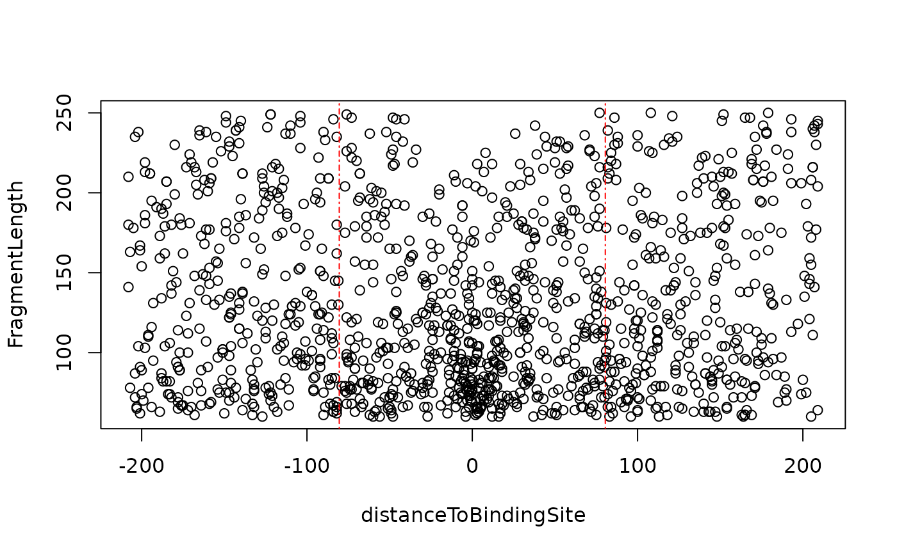

distanceDyad.RdCalculate the distance of potential nucleosome dyad and the linear model for V.
distanceDyad(vPlotOut, fragLenRanges = c(60, 180, 250), draw = TRUE, ...)
| vPlotOut | The output of vPlot. |
|---|---|
| fragLenRanges | A numeric vector (length=3) for fragment size of nucleosome free and mono-nucleosome. Default c(60, 180, 250). |
| draw | Plot the results or not. Default TRUE. |
| ... | Prameters could be passed to plot. |
an invisible list with distance of nucleosome and the linear model.
Jianhong Ou
#>#>#> #>#> #> #>#>#>#>vp <- vPlot(bamfile, pfm=CTCF[[1]], genome=Hsapiens, min.score="95%", seqlev="chr1", draw=FALSE) distanceDyad(vp)